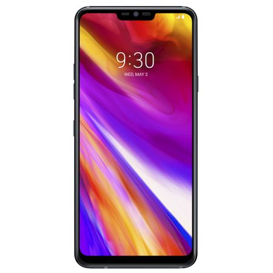

Pret:3800lei

Descriere:
Simplitate Designul care te atrage. Ecran mare de 6.1 inch QHD + FullVision, proiectat cu precizie intr-o
forma care se simte cu adevarat naturala. Afisaj G7 este echipat cu pixeli albi in ecran pentru a adauga
claritate in imagine si luminozitate in timp ce maximizeaza eficienta bateriei. AI CAM Cu LG G7 puteti obtine
o fotografie perfecta. AI CAM analizeaza subiectele din cadrul dumneavoastra si ofera recomandari usoare
privind imbunatatirea imaginii. Camera Captati fiecare moment cu o camera atat de inteligenta, incat stie
cand este prea intunecata si mareste automat luminozitatea. Toate imaginile sunt analizate si sortate cu
exactitate in diferite albume. Modul portret Cu ajutorul modului portret poti estompeaza fundalul pentru
un efect uimitor , aplicat in timp real sau dupa capturarea fotografiei. Obiectivul cu unghi larg va permite
sa capturati mai mult in fiecare fotografie, inclusiv grupuri mari sau peisaje. Acum toate intrebarile si
solicitarile vor fi auzite. G7 iti recunoaste vocea si in locuri zgomotoase cum ar fi masina, pe o barca
sau cand asculti muzica. Durabilitate Luati-l oriunde, utilizati-l oriunde designul de calitate militara
rezistent la apa si praf.
Comentarii: